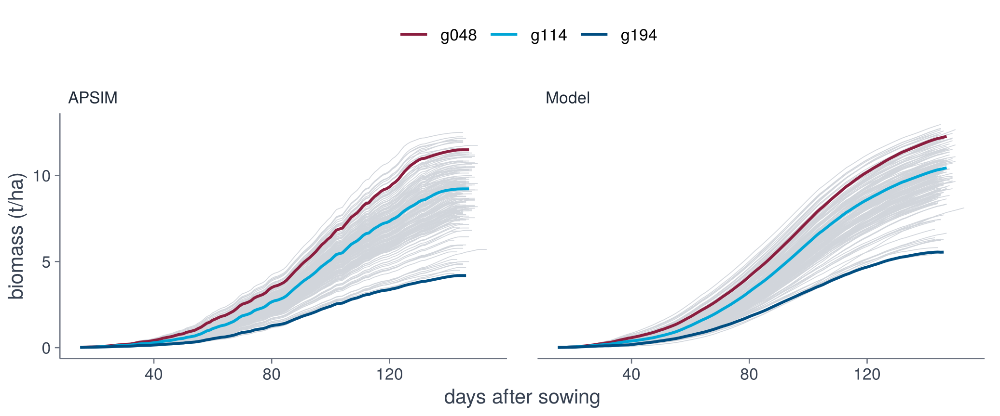
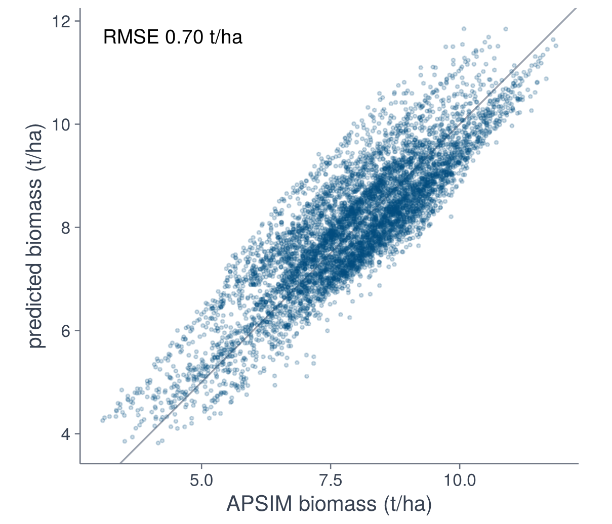
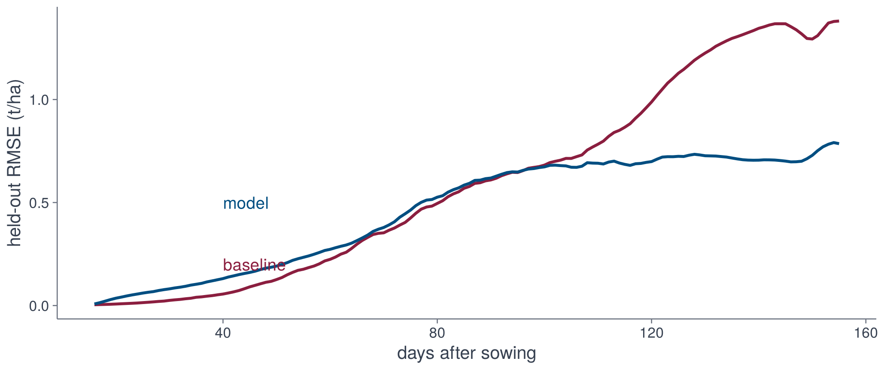
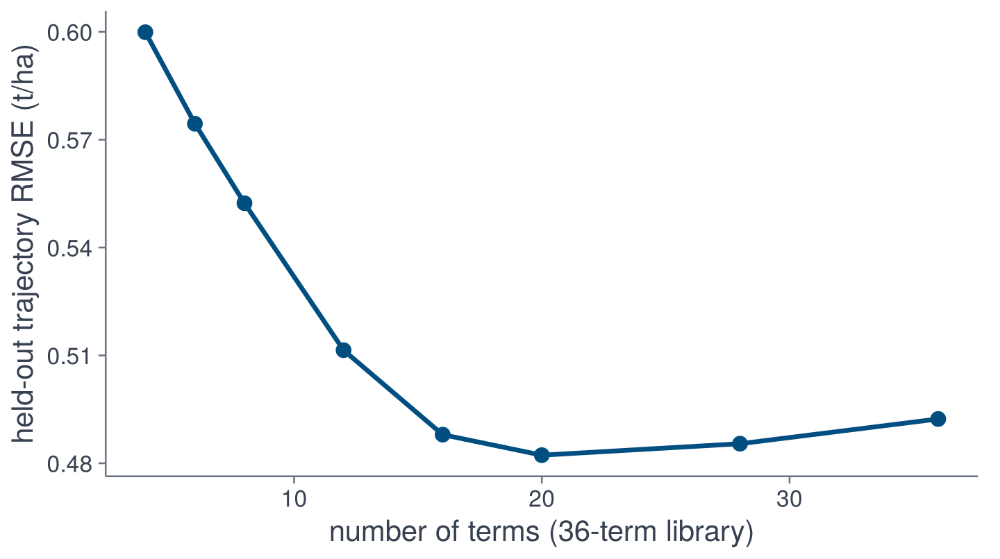

P <- cached("cv_stlsq.rds", cross_validate(Theta, tr, fit_stlsq))
round(evaluate(P, tr), 3)5 · Validation
source("R/pipeline.R")import matplotlib.pyplot as plt
import numpy as np
import pandas as pd
from dgxe import *
wx = pd.read_csv("data/narrabri_weather.csv")
traj = pd.read_csv("data/narrabri_biomass.csv.gz")
drv = make_drivers(wx)
Theta = make_library(drv)
tr = make_trajectories(traj, drv)Solution
With a library that depends on the drivers only, the solution of the fitted equation is a cumulative sum of the predicted daily growth:
## coef: intercept and term coefficients; Theta_y: day x term (one season).
simulate <- function(coef, Theta_y, y0) {
rate <- cbind(1, Theta_y[-nrow(Theta_y), ]) %*% coef
y0 + c(0, cumsum(rate))
}# coef: intercept and term coefficients; Theta_s: day x term (one season).
def simulate(coef, Theta_s, y0):
rate = coef[0] + Theta_s[:-1] @ coef[1:]
return y0 + np.concatenate([[0], np.cumsum(rate)])Leave-one-season-out cross-validation
For every genotype and every season, the model is fitted to the other 30 seasons of that genotype and used to predict the left-out season from its drivers, starting from the mean initial biomass of the training seasons.
## Each season is predicted by a model fitted to the other seasons of the same
## genotype, starting from the mean initial biomass of those seasons.
## Returns P[genotype, season, day].
cross_validate <- function(Theta, tr, fit, genotypes = tr$genotypes) {
P <- array(NA_real_, dim(tr$Y))
for (g in match(genotypes, tr$genotypes)) {
d <- make_design(Theta, tr, tr$genotypes[g])
for (v in seq_along(tr$years)) {
train <- d$season != v
coef <- fit(d$X[train, ], d$dy[train])
P[g, v, ] <- simulate(coef, Theta[v, , ], mean(tr$Y[g, -v, 1]))
}
}
P
}
## RMSE over whole trajectories, on a fixed day (array index; 99 is day 113
## after sowing) and at maturity. Genotypes that were not predicted are ignored.
evaluate <- function(P, tr, fixed_day = 99) {
err <- P - tr$Y
err[, , 1] <- NA # the initial value is given
last <- cbind(as.vector(row(tr$nend)), as.vector(col(tr$nend)),
as.vector(tr$nend) + 1)
rmse <- function(e) sqrt(mean(e^2, na.rm = TRUE))
c(trajectory_rmse = rmse(err), fixed_day_rmse = rmse(err[, , fixed_day]),
maturity_rmse = rmse(err[last]))
}# Each season is predicted by a model fitted to the other seasons of the same
# genotype, starting from the mean initial biomass of those seasons.
# Returns P[genotype, season, day].
def cross_validate(Theta, tr, fit, genotypes=None):
P = np.full(tr.Y.shape, np.nan)
for g in (tr.genotypes if genotypes is None else genotypes):
i = list(tr.genotypes).index(g)
d = make_design(Theta, tr, g)
for s in range(len(tr.years)):
train = d.season != s
coef = fit(d.X[train], d.dy[train])
y0 = np.delete(tr.Y[i, :, 0], s).mean()
P[i, s] = simulate(coef, Theta.array[s], y0)
return P
# RMSE over whole trajectories, on a fixed day (days after sowing) and at
# maturity. Genotypes that were not predicted are ignored.
def evaluate(P, tr, fixed_day=113):
err = P - tr.Y
err[:, :, 0] = np.nan # the initial value is given
g, s = np.indices(tr.nend.shape)
def rmse(e):
return np.sqrt(np.nanmean(e ** 2))
return {"trajectory_rmse": rmse(err),
"fixed_day_rmse": rmse(err[:, :, fixed_day - tr.das0]),
"maturity_rmse": rmse(err[g, s, tr.nend])}The sparse model (STLSQ) for all 199 genotypes, with the root-mean-square error (RMSE, t/ha) over whole trajectories, on day 113 after sowing, and at maturity:
P = cross_validate(Theta, tr, fit_stlsq)
print({k: round(float(v), 3) for k, v in evaluate(P, tr).items()})trajectory_rmse fixed_day_rmse maturity_rmse
0.526 0.701 0.761 Predicted trajectories
Season 1998, predicted by models that were fitted without it. All genotypes are shown in grey; the genotypes with the lowest, median and highest final biomass are in colour.
v <- match(1998, tr$years)
three <- spread_genotypes(tr)
cells <- which(!is.na(tr$Y[, v, ]), arr.ind = TRUE) # genotype, day
long <- data.frame(genotype = tr$genotypes[cells[, 1]],
das = cells[, 2] + tr$das0 - 1)
d <- rbind(cbind(long, source = "APSIM", biomass = tr$Y[, v, ][cells]),
cbind(long, source = "Model", biomass = P[, v, ][cells]))
ggplot(d, aes(das, biomass, group = genotype)) +
geom_line(colour = "#D1D5DB", linewidth = 0.2) +
geom_line(data = d[d$genotype %in% three, ], aes(colour = genotype),
linewidth = 0.7) +
facet_wrap(~source) +
scale_colour_dgxe("burgundy", "cyan", "blue") +
labs(x = "days after sowing", y = "biomass (t/ha)") +
theme_dgxe() +
legend_top()s = list(tr.years).index(1998)
three = spread_genotypes(tr)
days = np.arange(tr.Y.shape[2]) + tr.das0
alive = ~np.isnan(tr.Y[:, s]) # days before maturity
fig, axes = plt.subplots(1, 2, sharey=True, figsize=(8, 3))
for ax, title, Y in zip(axes, ["APSIM", "Model"], [tr.Y, P]):
Ys = np.where(alive, Y[:, s], np.nan)
ax.plot(days, Ys.T, color=GREY, lw=0.2)
for g, colour in zip(three, [BURGUNDY, CYAN, BLUE]):
ax.plot(days, Ys[np.searchsorted(tr.genotypes, g)], color=colour,
lw=0.9, label=g)
ax.set_title(title, loc="left")
axes[0].legend(frameon=False)
axes[0].set_ylabel("biomass (t/ha)")
fig.supxlabel("days after sowing")
fig.tight_layout()
Predicted against APSIM biomass on day 113, all genotype-season pairs:
d <- data.frame(obs = as.vector(tr$Y[, , 99]), pred = as.vector(P[, , 99]))
rmse <- sqrt(mean((d$obs - d$pred)^2))
ggplot(d, aes(obs, pred)) +
geom_abline(colour = dgxe[["grey"]], linewidth = 0.4) +
geom_point(colour = dgxe[["blue"]], size = 0.5, alpha = 0.2) +
annotate("text", x = min(d$obs), y = max(d$pred), hjust = 0, vjust = 1,
size = 3.4, label = sprintf("RMSE %.2f t/ha", rmse)) +
coord_equal() +
labs(x = "APSIM biomass (t/ha)", y = "predicted biomass (t/ha)") +
theme_dgxe()obs = tr.Y[:, :, 113 - tr.das0].ravel()
pred = P[:, :, 113 - tr.das0].ravel()
rmse = np.sqrt(np.mean((obs - pred) ** 2))
fig, ax = plt.subplots(figsize=(4, 4))
ax.plot([obs.min(), obs.max()], [obs.min(), obs.max()], color="#9CA3AF", lw=0.8)
ax.scatter(obs, pred, s=2, alpha=0.2, color=BLUE)
ax.text(obs.min(), pred.max(), f"RMSE {rmse:.2f} t/ha", va="top")
ax.set_aspect("equal")
ax.set_xlabel("APSIM biomass (t/ha)")
ax.set_ylabel("predicted biomass (t/ha)")
fig.tight_layout()
Baseline without weather
As a reference, each trajectory is predicted by the mean curve of the same genotype in the other seasons. This prediction does not use the weather.
## Baseline without weather: each trajectory is the mean curve of the same
## genotype in the other seasons (held at its last value once all other
## seasons have ended), with the true initial value.
lookup_trajectory <- function(tr) {
hold_last <- function(v) replace(v, is.nan(v), tail(v[!is.nan(v)], 1))
P <- array(NA_real_, dim(tr$Y))
for (y in seq_along(tr$years)) {
m <- apply(tr$Y[, -y, , drop = FALSE], c(1, 3), mean, na.rm = TRUE)
P[, y, ] <- t(apply(m, 1, hold_last))
P[, y, 1] <- tr$Y[, y, 1]
}
P
}# Baseline without weather: each trajectory is the mean curve of the same
# genotype in the other seasons (held at its last value once all other
# seasons have ended), with the true initial value.
def lookup_trajectory(tr):
seen = ~np.isnan(tr.Y)
total, count = np.nansum(tr.Y, axis=1), seen.sum(axis=1) # genotype x day
n = count[:, None, :] - seen # other seasons
with np.errstate(invalid="ignore", divide="ignore"):
P = (total[:, None, :] - np.nan_to_num(tr.Y)) / n
last = (n > 0).sum(axis=2, keepdims=True) - 1 # last day seen
P = np.where(n > 0, P, np.take_along_axis(P, last, axis=2))
P[:, :, 0] = tr.Y[:, :, 0]
return Pbase <- lookup_trajectory(tr)
round(evaluate(base, tr), 3)base = lookup_trajectory(tr)
print({k: round(float(v), 3) for k, v in evaluate(base, tr).items()})trajectory_rmse fixed_day_rmse maturity_rmse
0.739 0.840 1.423 The error as a function of time:
days <- 2:dim(tr$Y)[3] + tr$das0 - 1
d <- rbind(data.frame(das = days, rmse = rmse_by_day(P, tr), model = "model"),
data.frame(das = days, rmse = rmse_by_day(base, tr),
model = "baseline"))
ggplot(d[d$das <= 155, ], aes(das, rmse, colour = model)) +
geom_line(linewidth = 0.8) +
scale_colour_dgxe("burgundy", "blue") +
annotate("text", x = 40, y = 0.5, label = "model",
colour = dgxe[["blue"]], size = 3.4, hjust = 0) +
annotate("text", x = 40, y = 0.2, label = "baseline",
colour = dgxe[["burgundy"]], size = 3.4, hjust = 0) +
labs(x = "days after sowing", y = "held-out RMSE (t/ha)") +
theme_dgxe()days = np.arange(1, tr.Y.shape[2]) + tr.das0
fig, ax = plt.subplots(figsize=(7, 3))
ax.plot(days, rmse_by_day(P, tr), color=BLUE, label="model")
ax.plot(days, rmse_by_day(base, tr), color=BURGUNDY, label="baseline")
ax.set_xlim(right=155)
ax.set_xlabel("days after sowing")
ax.set_ylabel("held-out RMSE (t/ha)")
ax.legend(frameon=False)
fig.tight_layout()
Individual trajectories
Held-out prediction of the sparse model (STLSQ, fitted to the other seasons) and of the baseline for one genotype and season. Forty genotypes are available.
The figure uses results computed beforehand (scripts/precompute_interactive.R).
Comparison of fitting methods
All methods of step 4 are evaluated in the same way:
scores <- cached("cv_methods.rds", t(sapply(fit_methods, function(fit) {
evaluate(cross_validate(Theta, tr, fit), tr)
})))
round(rbind(scores, baseline = evaluate(base, tr)), 3)scores = pd.DataFrame({name: evaluate(cross_validate(Theta, tr, fit), tr)
for name, fit in fit_methods.items()}).T
scores.loc["baseline"] = evaluate(base, tr)
print(scores.round(3)) trajectory_rmse fixed_day_rmse maturity_rmse
OLS 0.519 0.687 0.758
ridge 0.523 0.702 0.749
lasso 0.528 0.712 0.750
elastic net 0.527 0.710 0.747
best subset (k = 8) 0.529 0.715 0.752
backward (k = 8) 0.529 0.713 0.754
STLSQ 0.526 0.701 0.761
baseline 0.739 0.840 1.423The methods are close to each other. The sparse models use fewer terms for a similar error, and all of them improve on the baseline, mainly late in the season.
Number of terms
With 12 terms there is little to remove. For a larger library that includes products of drivers (pairs = TRUE, 36 terms), the held-out error of backward elimination (every fifth genotype) as a function of the number of terms is:
Theta2 <- make_library(drv, pairs = TRUE)
genotypes <- tr$genotypes[seq(1, 199, by = 5)]
ks <- c(4, 6, 8, 12, 16, 20, 28, 36)
by_k <- cached("rmse_vs_k.rds", data.frame(k = ks, rmse = sapply(ks, function(k) {
fit <- function(X, dy) fit_subset(X, dy, k, "backward")
evaluate(cross_validate(Theta2, tr, fit, genotypes), tr)[[1]]
})))Theta2 = make_library(drv, pairs=True)
genotypes = tr.genotypes[::5]
ks = [4, 6, 8, 12, 16, 20, 28, 36]
def rmse_for(k):
def fit(X, dy):
return fit_subset(X, dy, k, "backward")
return evaluate(cross_validate(Theta2, tr, fit, genotypes),
tr)["trajectory_rmse"]
by_k = pd.DataFrame({"k": ks, "rmse": [rmse_for(k) for k in ks]})ggplot(by_k, aes(k, rmse)) +
geom_line(colour = dgxe[["blue"]], linewidth = 0.8) +
geom_point(colour = dgxe[["blue"]], size = 2) +
labs(x = "number of terms (36-term library)",
y = "held-out trajectory RMSE (t/ha)") +
theme_dgxe()fig, ax = plt.subplots(figsize=(5, 2.8))
ax.plot(by_k["k"], by_k["rmse"], "o-", color=BLUE)
ax.set_xlabel("number of terms (36-term library)")
ax.set_ylabel("held-out trajectory RMSE (t/ha)")
fig.tight_layout()